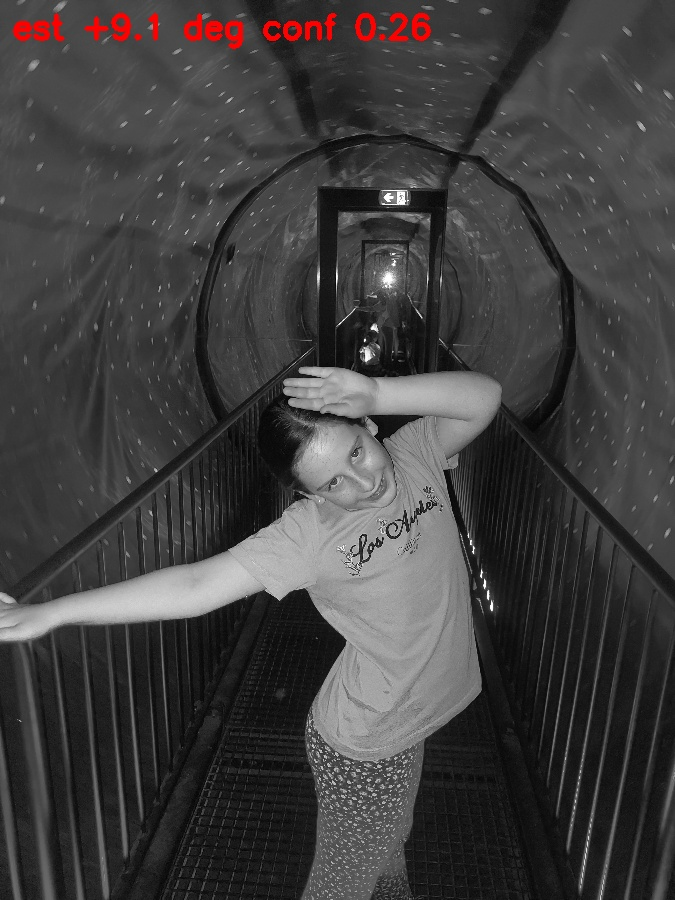
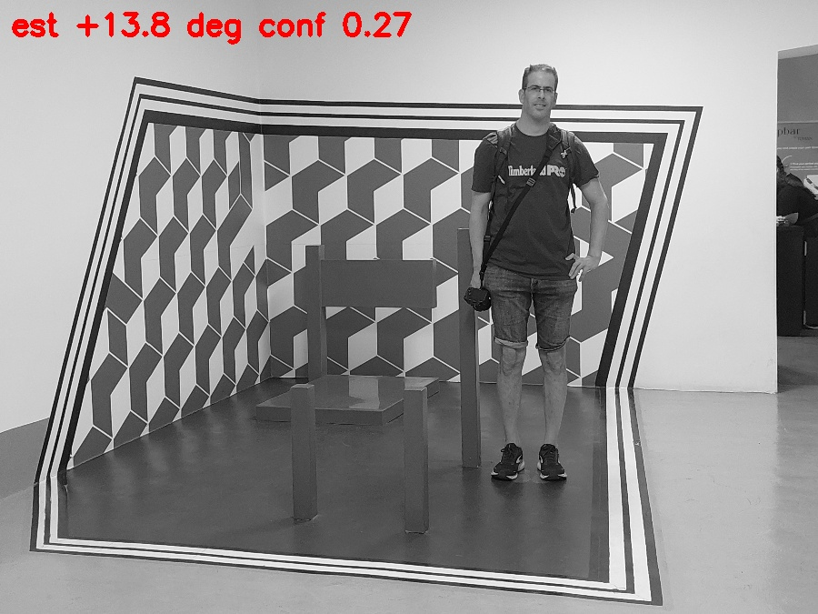

Goal. Validate a classical tilt estimator (Canny → Hough segments → per-family
histogram-peak with horizontal/vertical agreement check) before wiring a tilt penalty into
select_best. Gates: MAE < 1.5°, ≥80% of ≥4° tilts caught, ≤5% upright photos falsely
flagged.
D:\Budapest2025_Google), EXIF-normalized, rotated by known
±{2,4,6,8,10}° (central 72% crop hides corners). Recovery measured relatively
(estimate(rotated) − estimate(original)) so each photo's own tilt cancels.sim_bench/quality_assessment/tilt.py, 13 unit tests green.| Metric | Value | Gate | Verdict |
|---|---|---|---|
| Angular MAE on confident estimates | 0.32° | < 1.5° | pass |
| Recall within confident pairs (≥4° within ±2°) | 100% | — | pass |
| Coverage: album photos measurable at all | 4.9% | (implied high) | FAIL |
| Confidently flagged originals >3° | 2.5% (3 photos) | ≤5% | nominal pass, but see below |
| Perf per estimate | 49 ms | < 100 ms | pass |
Relaxing the confidence gate to raise coverage destroys precision (support-sat 0.75: coverage
6% but MAE 3.3°; gate 0.2: MAE 2.9-4.6°). The precision/coverage tradeoff has no good middle on
this album. Full sweep: metrics.json.
Both inspectable confidently-flagged originals are upright photos whose scene lines are slanted — a tunnel's converging railings, and a deliberately-distorted optical-illusion artwork. The estimator measures line angles perfectly; it cannot know whether the camera or the world was tilted. That distinction needs a gravity reference (IMU data or a learned semantic prior), which pixels alone don't carry.


Generated 2026-07-12 by scripts/experiment_tilt_benchmark.py;
estimator sim_bench/quality_assessment/tilt.py; spec specs/099-tilt-detection-penalty/.